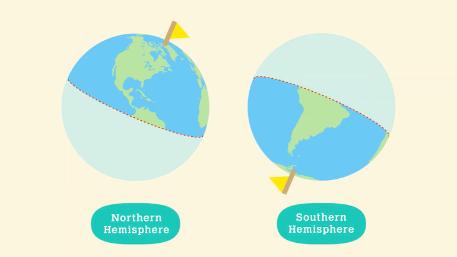
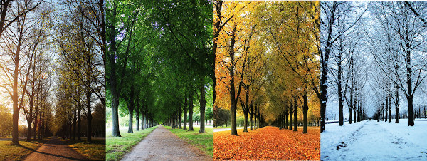

Clique para minimizar

Clique para minimizar
Diferença das estações do ano nos hemisférios norte e sul
Clique para ampliar
Durante o movimento de translação, que dura um ano, a incidência de luz solar é diferente em cada região, devido à inclinação do planeta. Por conta disso, há uma maior insolação no Hemisfério Sul durante alguns meses do ano e, em seguida, a situação inverte-se, com maior incidência de raios solares no Hemisfério Norte. Dessa forma, quando é verão no sul, é inverno no norte, e vice-versa. O mesmo ocorre com outono e primavera, que se alternam entre os hemisférios: quando é outono no sul, é primavera no norte.
Data de Inicio e Fim
- Primavera: 20 de março a 21 de junho
- Verão: 21 de junho a 23 de setembro
- Outono: 22/23 de setembro a 22 de dezembro
- Inverno: 22 de dezembro a 20 de março
Características
- Primavera: é conhecida como a estação das flores. Nessa estação, as temperaturas ficam mais amenas.
- Verão: é a estação mais quente do ano, tendo os dias mais longos e as noites mais curtas. Possui grande quantidade de chuvas devido à alta evaporação da água acumulada no solo.
- Outono: no geral, várias folhas das árvores caem, e muitas flores se transformam em frutos, servindo de alimento para a fauna da região. É conhecida por ser a estação das frutas.
- Inverno: é a estação mais fria do ano. As noites são mais longas e os dias são mais curtos, havendo hibernação de alguns animais.
Clique para ampliar